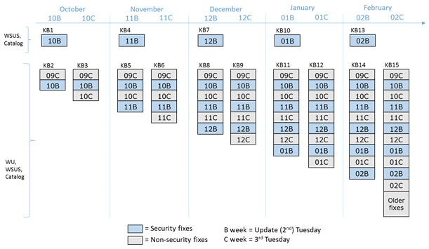

Version: Default* | Print Friendly With Images | Print Friendly Without Images
For: Windows Vista (32/64) | Windows 7 (32/64) | Windows 8 (32/64) | Windows 8.1 (32/64)
Last Reviewed/Updated: 25 Jun 2017 | Published: 14 Jan 2004 | Status: Active
Some Windows vulnerabilities can be exploited without user interaction as soon as the computer is placed online. Therefore, after performing a new installation of Windows, it is necessary to resolve the known examples of these Windows vulnerabilities before placing the computer online, including before running Windows Update or Microsoft Update.
Windows vulnerabilities are flaws in the Windows operating system code that render Windows susceptible to exploitation. The successful exploitation of a Windows vulnerability results in compromise. Toward securing Windows, it is instructive to divide Windows vulnerabilities into two groups: 1.) those that require user interaction to be exploited, and 2.) those that do not require user interaction to be exploited.
For the Windows vulnerabilities that require user interaction to be exploited, compromise requires user interaction on the computer besides placing the vulnerable computer online (i.e., connecting the computer to a network, be it an Intranet and/or the Internet). User interactions that can result in compromise, known as triggers, include attaching external/removable drives or network devices, visiting Web sites, accessing/receiving/opening emails, opening email attachments, creating/accessing/opening/installing/joining/connecting to network resources including but not limited to servers/domains/devices/shares/files/etc. In other words, for the Windows vulnerabilities that require user interaction to be exploited, in the absence of the appropriate user interaction required to trigger exploitation, compromise cannot occur simply by placing the vulnerable computer online.
For the Windows vulnerabilities that do not require user interaction to be exploited, compromise does not require any user interaction on the computer besides placing the vulnerable computer online. In other words, for the Windows vulnerabilities that do not require user interaction to be exploited, there is no trigger and compromise can occur simply by placing the vulnerable computer online.
After installing Windows, a common practice is to place the computer online and run Windows Update or Microsoft Update (Windows/Microsoft Update) to install the latest Windows Service Packs and Security Updates for Windows. Although the intension (to secure Windows) is good, this practice is bad. Why? Because, for the Windows vulnerabilities that do not require user interaction to be exploited, compromise can occur simply by placing the vulnerable computer online, and this includes during the time that Windows/Microsoft Update is running and installing the latest Windows Service Packs and Security Updates for Windows.
Worms are the class of threat that automatically run themselves on, and automatically copy themselves from, computer to computer over a network without user interaction. In order to do this, worms exploit Windows vulnerabilities that, themselves, do not require user interaction to be exploited. Then, after the worm has exploited the Windows vulnerability, it runs itself on the now compromised computer, including possibly delivering a destructive payload, and then attempts to copy itself to other vulnerable computers on the network, again without user interaction.
Worms are extremely dangerous because they can automatically infect a tremendous number of vulnerable networked Windows computers seemingly simultaneously without any user interaction besides placing the vulnerable computers online. Particularly infamous Worms are mentioned on the evening news and include W32.Blaster.Worm (symantec.com), W32.Welchia.Worm (a.k.a., Nachi) (symantec.com), W32.Sasser.Worm (symantec.com), W32.Downadup (a.k.a., Conficker) (symantec.com), and Ransom.Wannacry (symantec.com). Moreover, Blaster, Welchia, Sasser, and Downadup remain so prevalent that even today - years after they were developed - vulnerable Windows computers are still being compromised by these worms as soon as they are placed online, including during the time that Windows/Microsoft Update is running.
Fortunately, most of the Windows vulnerabilities that do not require user interaction to be exploited are not wormable (i.e., are not suitable for worms). Instead, most of the Windows vulnerabilities that do not require user interaction to be exploited require that an attacker sends specially crafted packets over the network to the vulnerable computer. Although this requirement reduces the likelihood of compromise in many environments, it does not completely eliminate the possibility, and, therefore, to secure a new installation of Windows, it is necessary to resolve the known examples of the Windows vulnerabilities that do not require user interaction to be exploited before, not after, placing the computer online.
1.2. Security Updates for Windows
In the past Microsoft released a Microsoft Security Bulletin Summary on the second Tuesday of each month (a.k.a., Patch Tuesday) for the supported versions of Windows. A Microsoft Security Bulletin Summary consists of one or more Microsoft Security Bulletins. A Microsoft Security Bulletin describes one or more vulnerabilities in a Microsoft product, and describes and provides a link to one or more Security Updates for Windows. A Security Update for Windows is a file that resolves (a.k.a, patches) a vulnerability in a Microsoft product upon being installed.
Security Updates for Windows can be installed manually via the links provided in the Microsoft Security Bulletins, which direct one to the Microsoft Download Center, or they can be installed in an automated, batch-like fashion via Windows/Microsoft Update. Per this Web page, some Security Updates are installed before placing the computer online. This requires downloading the Security Updates for Windows from the Microsoft Download Center and copying them to CD/DVD.
1.3. Windows 7/8.1 Servicing Model (Bundled Updates And Update Rollups Including Security Fixes) Starting October 2016
The Microsoft Security Bulletin Summary For September 2016 (technet.microsoft.com), which includes through MS16-117, was the last Microsoft Security Bulletin Summary with individual Security Updates for Windows 7/8.1. Starting with the Microsoft Security Bulletin Summary For October 2016 (technet.microsoft.com), Microsoft replaced the monthly release of individual Security Updates for Windows 7/8.1 with the monthly release of bundled updates and update rollups including security fixes for Windows 7/8.1, of which there are three types:
| Windows 7/8.1 Servicing Model (Bundled Updates And Update Rollups Including Security Fixes) Starting October 2016 (1) | |||
| Bundled Update And Update Rollup Type/ Description |
Security Only Quality Update (a.k.a., Security Only) |
Security Monthly Quality Rollup (a.k.a., Monthly Rollup) |
Preview Of Monthly Quality Rollup (a.k.a., Preview Rollup) |
|---|---|---|---|
| Released On | Second Tuesday of the month (a.k.a., B week and Update Tuesday, formerly Patch Tuesday). | Second Tuesday of the month (a.k.a., B week and Update Tuesday, formerly Patch Tuesday). | Third Tuesday of the month (a.k.a., C week). |
| Contains | A single update containing all new security fixes for that month. | A single update containing all new security fixes for that month (the same ones included in the security only update released at the same time), as well as fixes from all previous monthly rollups. | An additional monthly rollup containing a preview of new non-security fixes that will be included in the next monthly rollup, as well as fixes from all previous monthly rollups. |
| Available To Public Via |
|
|
|
| Unique KB Number | Yes | Yes | Yes |
| (1) Source: More On Windows 7 And Windows 8.1 Servicing Changes (blogs.technet.microsoft.com). | |||
The Windows 7/8.1 servicing model (bundled updates and update rollups including security fixes) starting October 2016 by diagram (Source: More On Windows 7 And Windows 8.1 Servicing Changes (blogs.technet.microsoft.com)):

1.4. Microsoft Security Fix Documentation (Security Update Guide) Starting April 2017
The Microsoft Security Bulletin Summary For March 2017 (technet.microsoft.com), which includes through MS17-023, was the last Microsoft Security Bulletin Summary, and MS17-023 was the last Microsoft Security Bulletin. Starting in April 2017, Microsoft:
1.5. Windows Service Packs/Convenience Rollups/Point Releases/Updates
In the past Microsoft released a Windows Service Pack (SP) for the supported versions of Windows approximately every 12-24 months. It appears, however, that Microsoft is moving away from releasing Windows Service Packs. For instance, there were four Windows Service Packs for Windows 2000, three Windows Service Packs for Windows XP, two Windows Service Packs for Windows Vista, and it appears there will only be one Windows Service Pack for Windows 7. In addition, for Windows 8, Microsoft has introduced a new Windows Point Release scheme (as in Windows 8.1) and a new Windows Update scheme (as in Windows 8.1 Update) for delivering what might have been previously considered Windows Service Packs.
Window 7 Service Pack 1 (Windows 7 SP1) is a single file that contains multiple previously released Updates for Windows 7, multiple previously released Security Updates for Windows 7, and new Windows 7 features. Therefore, toward securing a new installation of Windows 7, the installation of Window 7 SP1 resolves multiple old Windows 7 vulnerabilities.
Window 7 Service Pack 1 Convenience Rollup (KB3125574) (Windows 7 SP1 Convenience Rollup) is a single file that contains multiple previously released Updates for Windows 7 SP1 and multiple previously released Security Updates for Windows 7 SP1. Therefore, toward securing a new installation of Windows 7 SP1, the installation of Window 7 SP1 Convenience Rollup resolves multiple old Windows 7 SP1 vulnerabilities.
The Update To Windows 8.1 (pronounced Windows eight point one; hence, the categorization of the Update To Windows 8.1 as a Windows Point Release) is an update to Windows 8 that contains multiple previously released Updates for Windows 8, multiple previously released Security Updates for Windows 8, and new Windows 8 features. Therefore, toward securing a new installation of Windows 8, the installation of the Update To Windows 8.1 resolves multiple old Windows 8 vulnerabilities.
Windows 8.1 Update (Windows RT 8.1, Windows 8.1, And Windows Server 2012 R2 Update: April 2014, KB2919355) is an update to Windows 8.1 that contains multiple previously released Updates for Windows 8.1, multiple previously released Security Updates for Windows 8.1, and new Windows 8.1 features. Therefore, toward securing a new installation of Windows 8.1, the installation of Windows 8.1 Update resolves multiple old Windows 8.1 vulnerabilities.
Over time multiple Windows Service Packs, Windows Convenience Rollups, Windows Point Releases, and/or Windows Updates (Windows Service Packs/Convenience Rollups/Point Releases/Updates) might be released for a particular version of Windows. Some Windows Service Packs/Convenience Rollups/Point Releases/Updates are cumulative and, therefore, do not require the installation of a previous Windows Service Pack/Convenience Rollup/Point Release/Update. Some Windows Service Packs/Convenience Rollups/Point Releases/Updates are not cumulative and, therefore, require the installation of a previous Windows Service Pack/Convenience Rollup/Point Release/Update.
| Windows Vista/7/8/8.1 Service Packs/Convenience Rollups/Point Releases/Updates Installation Requirements | ||||||
| Windows | Vista | 7 | 8 | |||
|---|---|---|---|---|---|---|
| Service Pack/Convenience Rollup/Point Release/Update | SP1 | SP2 | SP1 | SP1 Convenience Rollup | 8.1 | 8.1 Update |
| Requires Installation Of Service Pack/Convenience Rollup/Point Release/Update | - | SP1 | - | SP1 | - | 8.1 |
The release date of a Windows Service Pack/Convenience Rollup/Point Release/Update does not necessarily indicate the cutoff date for the inclusion of Security Updates for Windows in the Windows Service Pack/Convenience Rollup/Point Release/Update. For example, Windows 7 SP1 was released to manufacturing (RTM) on February 9, 2011. Based on release date, one might assume that Windows 7 SP1 includes all of the Security Updates for Windows 7 released through the Microsoft Security Bulletin Summary for February 2011, which was released on February 8, 2011 and includes through MS11-014. This assumption is wrong: Windows 7 SP1 includes the Security Update for Windows 7 for MS11-011, but does not include the Security Updates for Windows 7 for MS11-003, MS11-004, MS11-007, MS11-009, MS11-012, and MS11-013. Instead, Windows 7 SP1 only includes all of the Security Updates for Windows 7 released through the Microsoft Security Bulletin Summary for January 2011, which was released on January 11, 2011 and includes through MS11-002. In addition, Windows 7 SP1 Convenience Rollup was released on May 17, 2016. Based on release date, one might assume that Windows 7 SP1 Convenience Rollup includes all of the Security Updates for Windows 7 SP1 released through the Microsoft Security Bulletin Summary for May 2016, which was released on May 10, 2016 and includes through MS16-067. This assumption is wrong: Windows 7 SP1 Convenience Rollup includes most, not all of the Security Updates for Windows 7 SP1 released through the Microsoft Security Bulletin Summary for April 2016, which was released on April 12, 2016 and includes through MS16-050.
| Security Updates For Windows Included In The Latest Windows Vista/7/8/8.1 Service Pack/Convenience Rollup/Point Release/Update | ||||
| Windows | Vista | 7 | 8 | |
|---|---|---|---|---|
| Latest Service Pack/Convenience Rollup/Point Release/Update (Release Date) |
SP2 (RTM: 28 Apr 2009) (Gen: 26 May 2009) |
SP1 (RTM: 09 Feb 2011) (Gen: 22 Feb 2011) |
SP1 Convenience Rollup (Gen: 17 May 2016) |
8.1 Update (Gen: 08 Apr 2014) |
| Includes Security Updates For Windows (Release Date) |
All through MS09-015. (14 Apr 2009) |
All through MS11-002. (11 Jan 2011) |
Most from MS11-003 to MS16-050. (08 Feb 2011 to 12 Apr 2016) |
All through MS14-019. (08 Apr 2014) |
Per this Web page, whenever possible, Windows Service Packs/Convenience Rollups/Point Releases/Updates are installed before placing the computer online. This requires downloading the available Windows Service Packs/Convenience Rollups/Point Releases/Updates from Microsoft and copying them to CD/DVD.
1.6. Overview: How To Secure A New Installation Of Windows
Per this Web page, securing Windows means to resolve all known Windows vulnerabilities before they can be exploited. Toward securing Windows, it is instructive to divide Windows vulnerabilities into two groups: 1.) those that require user interaction to be exploited, and 2.) those that do not require user interaction to be exploited.
The Windows vulnerabilities that do not require user interaction to be exploited must be resolved offline (i.e., before placing the computer online). For the Windows vulnerabilities that require user interaction to be exploited, provided the user has not and interacted with the computer in any way that could result in compromise, (e.g., by visiting Web sites, receiving/opening emails, opening email attachments, creating/accessing shares, opening/running/installing shared files, accessing/opening/running/installing downloaded or otherwise acquired files, etc.), they can be resolved by placing the computer online and running Windows/Microsoft Update. The following overviews of how to secure a new installation of Windows Vista/7/8/8.1 resolve all known Windows vulnerabilities before they can be exploited and, therefore, secure the new installations of Windows Vista/7/8/8.1:
1.6.1. Overview: How To Secure A New Installation Of Windows Vista
1.6.2. Overview: How To Secure A New Installation Of Windows 7
Instead of releasing Windows 7 SP2, Microsoft decided to release Windows 7 SP1 Convenience Rollup. In addition, in Windows 7 SP1 Convenience Rollup, instead of including all of the Security Updates for Windows 7 SP1 released through April 2016, Microsoft decided to include most of the Security Updates for Windows 7 SP1 released through April 2016.
1.6.3. Overview: How To Secure A New Installation Of Windows 8
Instead of releasing the free Update To Windows 8.1 for download from Microsoft as a standalone/offline installer, Microsoft decided to release the free Update To Windows 8.1 from the Windows Store as an online installer. In addition, Microsoft decided the free Update To Windows 8.1 should automatically install Windows 8.1 Update and the Security Updates for Windows 8.1 released after Windows 8.1 Update.
1.6.4. Overview: How To Secure A New Installation Of Windows 8.1
Instead of releasing Windows 8.1 SP1, Microsoft decided to release Windows 8.1 Update.
1.7. Creating The List Of Security Updates For Windows That Resolve Windows Vulnerabilities That Do Not Require User Interaction To Be Exploited
1.7.1. Listing The Microsoft Security Bulletins Released After The Latest Versions Of Windows Vista/7/8/8.1
One of the steps to secure a new installation of Windows is to install the Security Updates for Windows released after Windows Vista SP2, after Windows 7 SP1 Convenience Rollup, after Windows 8 Original Release, and after Windows 8.1 Update that resolve Windows vulnerabilities that do not require user interaction to be exploited. To do this, it is necessary to read all of the Microsoft Security Bulletins released after these versions of Windows Vista/7/8/8.1. The following lists all of the Microsoft Security Bulletins released after the latest versions of Windows Vista/7/8/8.1:
1.7.2. Security Updates For Windows 7 SP1 Through April 2016 Not Included In Windows 7 SP1 Convenience Rollup
Microsoft has not provided a list of the Security Updates for Windows 7 SP1 included/not included in Windows 7 SP1 Convenience Rollup. Instead, Microsoft provided a list of the Files Included In Windows 7 SP1 Convenience Rollup (.csv) (download.microsoft.com) which, because it does not indicate the Security Updates for Windows 7 SP1 to which the files belong, is virtually useless for determining the Security Updates for Windows 7 SP1 included/not included in Windows 7 SP1 Convenience Rollup. In addition, upon installing Windows 7 SP1 Convenience Rollup, Control Panel | System and Security | Windows Update | Review update history lists Update for Windows (KB3125574), which is the Windows 7 SP1 Convenience Rollup itself, not the Security Updates for Windows 7 SP1 included in Windows 7 SP1 Convenience Rollup. As a result, it is easier to determine the Security Updates for Windows 7 SP1 not included in Windows 7 SP1 Convenience Rollup than the Security Updates for Windows 7 SP1 included in Windows 7 SP1. This can be accomplished by installing Windows 7 Includes SP1, installing the Windows 7 SP1 Convenience Rollup prerequisite, installing Windows 7 SP1 Convenience Rollup, installing Microsoft Update, running Microsoft Update to list the available Security Updates, and then identifying the Security Updates that were released before or during April 2016. The identified Security Updates constitute the Security Updates for Windows 7 SP1 through April 2016 not included in Windows 7 SP1 Convenience Rollup.
1.7.3. Identifying The Security Updates For Windows That Resolve Windows Vulnerabilities That Require User Interaction To Be Exploited
When reading the Microsoft Security Bulletins, the following language (taken from actual Microsoft Security Bulletins) identifies Security Updates for Windows that resolve Windows vulnerabilities that require user interaction to be exploited:
1.7.4. Identifying The Security Updates For Windows That Resolve Windows Vulnerabilities That Do Not Require User Interaction To Be Exploited
When reading the Microsoft Security Bulletins, the following language (taken from actual Microsoft Security Bulletins) identifies Security Updates for Windows that resolve Windows vulnerabilities that do not require user interaction to be exploited:
1.7.5. Policy On Security Update For Windows Supersedence And On Listing All Of The Security Updates For Windows Included In A Microsoft Security Bulletin
Sometimes a Microsoft Security Bulletin consists of one Security Update for Windows. Sometimes a Microsoft Security Bulletin consists of multiple Security Updates for Windows. Sometimes a new Security Update for Windows replaces an old Security Update for Windows. And sometimes when a Microsoft Security Bulletin consists of multiple Security Updates for Windows, only some of the Security Updates for Windows resolve Windows vulnerabilities that do not require user interaction to be exploited.
When a new Security Update for Windows replaces an old Security Update for Windows, it is said that the new Security Update for Windows supersedes (i.e., takes the place of/replaces) the old Security Update for Windows. Security Update for Windows supersedence information is presented in the Updates Replaced column of the Affected Software section of each Microsoft Security Bulletin.
When an old Security Update for Windows is superseded by a new Security Update for Windows, it is not necessary to install both the old superseded and the new superseding Security Updates for Windows. Instead, it is only necessary to install the new superseding Security Update for Windows. If the old superseded Security Update for Windows is already installed, it is not necessary to uninstall it. Instead, leave the old superseded Security Update for Windows installed and simply install the new superseding Security Update for Windows. When finished, both the old superseded and the new superseding Security Updates for Windows are listed as being installed. In other words, there is nothing wrong with installing both the old superseded and the new superseding Security Updates for Windows except that it is extra work.
Over time, the supersedence of Security Updates for Windows has become increasingly confounding. Moreover, in the last couple of years, there have been a couple of instances where the stated supersedence of Security Updates for Windows is questionable and/or appears to be incorrect. In short, instead of trying to decipher the correct supersedence of Security Updates for Windows (including writing emails to Microsoft asking them to check on supersedence), the following policy on Security Update for Windows supersedence has been adopted: ignore any supersedence and simply list all of the Microsoft Security Bulletins that include Security Updates for Windows that resolve Windows vulnerabilities that do not require user interaction to be exploited. Yes, this policy results in listing more Microsoft Security Bulletins than are absolutely necessary; but, it is far better than the alternative, which is possibly missing/not listing a Microsoft Security Bulletin that includes Security Updates for Windows that resolve Windows vulnerabilities that do not require user interaction to be exploited.
Lastly, when a Microsoft Security Bulletin consists of multiple Security Updates for Windows and only some of the Security Updates for Windows resolve Windows vulnerabilities that do not require user interaction to be exploited, the following policy on listing the Security Updates for Windows has been adopted: when a Microsoft Security Bulletin consists of multiple Security Updates for Windows and only some of the Security Updates for Windows resolve Windows vulnerabilities that do not require user interaction to be exploited, list all of the Security Updates for Windows included in the Microsoft Security Bulletin, including those that do not resolve Windows vulnerabilities that do not require user interaction to be exploited. Yes, this policy results in listing more Security Updates for Windows than are absolutely necessary; but, it is better than the alternative, which is someone wondering why some of the Security Updates for Windows in a Microsoft Security Bulletin were not listed.
2. Files To Copy To CD/DVD To Secure A New Installation Of Windows Vista/7/8/8.1
2.1. Files To Copy To CD/DVD To Secure A New Installation Of Windows Vista
Using a computer that is not compromised, download and copy the following files to CD/DVD to secure a new installation of Windows Vista:
2.2. Files To Copy To CD/DVD To Secure A New Installation Of Windows 7
Using a computer that is not compromised, download and copy the following files to CD/DVD to secure a new installation of Windows 7:
2.3. Files To Copy To CD/DVD To Secure A New Installation Of Windows 8
Using a computer that is not compromised, download and copy the following files to CD/DVD to secure a new installation of Windows 8:
2.4. Files To Copy To CD/DVD To Secure A New Installation Of Windows 8.1
Using a computer that is not compromised, download and copy the following files to CD/DVD to secure a new installation of Windows 8.1:
3. Secure A New Installation Of Windows Vista/7/8/8.1
3.1. Secure A New Installation Of Windows Vista
3.2. Secure A New Installation Of Windows 7
3.3. Secure A New Installation Of Windows 8
3.4. Secure A New Installation Of Windows 8.1
4. Resources And Additional Information